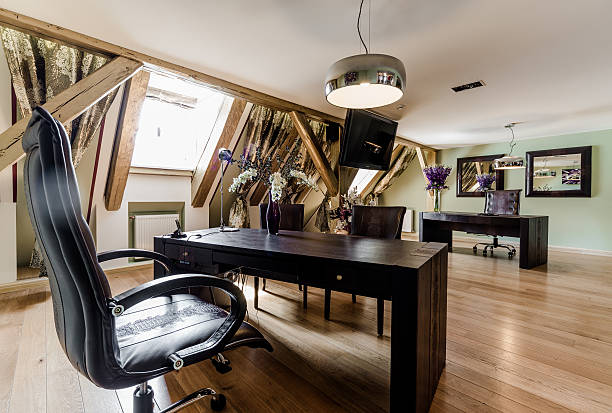

News
Location: Metro Center DC
Amenities: Metro Center DC
Pricing: Metro Center DC
About Us
Offices Metro
What is the most prestigious private office space in Metro Center Washington DC?
Jun 05, 2024
When it comes to private office spaces in Metro Center, Washington DC, one name stands out as the most prestigious: The Franklin Tower.. Located in the heart of downtown DC, The Franklin Tower offers a luxurious and exclusive environment for businesses and professionals looking for top-notch office space.
What sets The Franklin Tower apart from other private office spaces in the area is its unparalleled amenities and services.
What is the best location for a private office in Metro Center Washington DC?
Jun 05, 2024
When considering the best location for a private office in Metro Center Washington DC, there are several factors to take into account.
First and foremost, it is crucial to consider the accessibility of the location.. Metro Center is known for its excellent public transportation options, including multiple metro lines and bus routes.
What amenities are offered in the top private offices in Metro Center Washington DC?
Jun 05, 2024
When it comes to the top private offices in Metro Center Washington DC, you can expect a wide range of amenities that cater to your professional needs and preferences.. These exclusive workspaces are designed to provide a luxurious and productive environment for you to thrive in.
One of the key amenities offered in these top private offices is high-speed internet connectivity, ensuring that you can stay connected and work efficiently at all times.
What are the key factors to consider when choosing a private office in Metro Center Washington DC?
Jun 05, 2024
When it comes to choosing a private office in Metro Center Washington DC, there are several key factors that you should consider to ensure that you make the right decision for your business.
First and foremost, location is a crucial factor to take into account.. Metro Center is a prime area in the heart of Washington DC, making it convenient for clients and employees to access your office.
What sets apart the top private offices from others in Metro Center Washington DC?
Jun 05, 2024
When it comes to private offices in Metro Center Washington DC, there are certain qualities that set the top ones apart from the rest.. These elite spaces go above and beyond in providing a professional and luxurious environment for their clients.
One key factor that distinguishes the top private offices is their prime location in Metro Center.
How to Boost Productivity with a Private Office in Metro Center, Washington DC
Jun 05, 2024
In today's fast-paced world, productivity is key to success.. Whether you are a budding entrepreneur or a seasoned professional, having a private office in Metro Center, Washington DC can significantly boost your productivity and help you achieve your goals.
One of the main advantages of having a private office is the ability to work in a quiet and focused environment.
Discover the Secret to Success with Your Own Private Workspace in Metro Center
Jun 05, 2024
Have you ever felt like your productivity and creativity are stifled by the hustle and bustle of a busy office environment?. Have you dreamed of having your own private workspace where you can focus, think, and create without distractions?
Well, look no further than Metro Center for the secret to success with your very own private workspace.
Unlock Your Potential: Rent a Private Office in Metro Center Today!
Jun 05, 2024
Are you looking to take your business to the next level?. Do you want to unlock your full potential and achieve success in a professional environment?

Find out Why Top Professionals Choose Private Offices in Metro Center
Jun 05, 2024
Have you ever wondered why top professionals choose private offices in Metro Center?. The answer lies in the numerous benefits that come with having a dedicated workspace in this prime location.
First and foremost, privacy is key for many professionals who require a quiet and distraction-free environment to focus on their work.
Want to Take Your Business to the Next Level? Try a Private Office in Metro Center!
Jun 05, 2024
Are you ready to take your business to the next level?. Look no further than a private office in Metro Center!
Top private office spaces in Metro Center Washington DC
Jun 05, 2024
Metro Center in Washington DC is known for its bustling business district, and top private office spaces are in high demand in this area.. The convenience of being located in the heart of the city, with easy access to public transportation and a wide range of amenities, makes Metro Center an ideal location for businesses looking to establish a strong presence in the nation's capital.
When it comes to finding the best private office spaces in Metro Center, there are several factors to consider.
Benefits of renting a private office in Metro Center
Jun 05, 2024
Renting a private office in Metro Center can offer numerous benefits that can greatly enhance your work experience.. One of the main advantages is the privacy and freedom it provides.
Comparison of different private office providers in the area
Jun 05, 2024
When it comes to choosing a private office provider in your area, there are several factors to consider in order to find the best option for your needs.. From location and amenities to pricing and customer service, each provider offers a unique set of benefits that can make a big difference in your overall experience.
One important factor to consider when comparing different private office providers is the location of their offices.
Tips for setting up and designing a productive private office space
Jun 05, 2024
Creating a productive private office space is crucial for maintaining focus and efficiency while working.. By following some simple tips, you can design a workspace that is both functional and inspiring.
First and foremost, consider the layout of your office.
Testimonials from businesses that have rented private offices in Metro Center
Jun 05, 2024
Renting a private office in Metro Center can be a game-changer for businesses looking to elevate their workspace and enhance productivity.. But you don't have to take our word for it - just listen to what some of our satisfied tenants have to say about their experience renting with us.
One business owner, Sarah from XYZ Company, raves about the convenience and professionalism of Metro Center. "Renting a private office here has been a game-changer for my team.